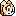

|
ブースト中は、いったんスピードが落ちても、すぐにトップスピードにもどります。 またブースト中は、普通では使えない 【ブーストアクション】 が使えるようになります。 |
 |
|
各キャラクターの 【トリックアクション】 の一部を紹介します！ |
|
横回転でクルクルまわりながら移動。 移動中に敵キャラクターがいるとダメージをあたえられる。 |

クリーム 【ソフトボンバー】
お尻から真下に下降する。 下に敵キャラクターがいると、お尻でダメージをあたえられる。 |
|
後ろにしっぽを回転させながら、 山なりに移動。 |
仕掛けジャンプ台などを使ったジャンプ時に、腕を真下に体を回転させながら攻撃。 |
© SEGA
_